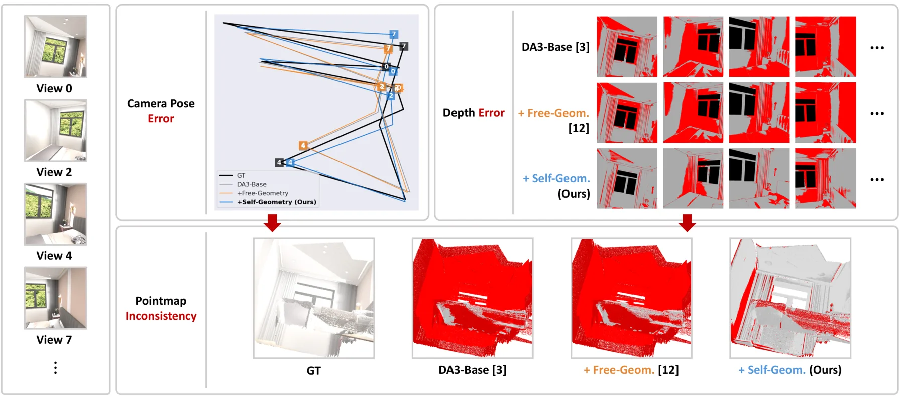
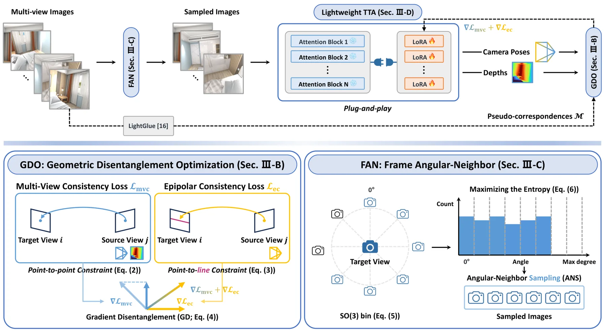
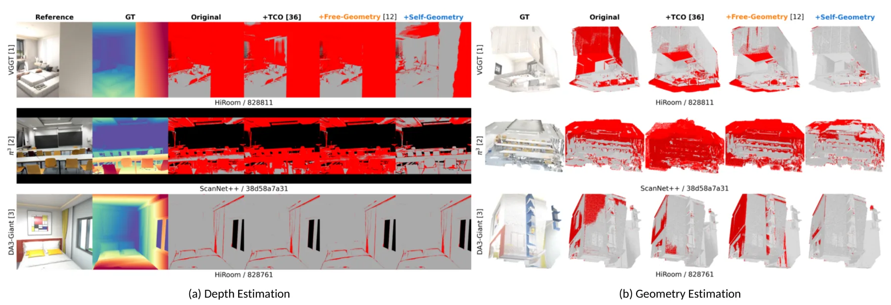
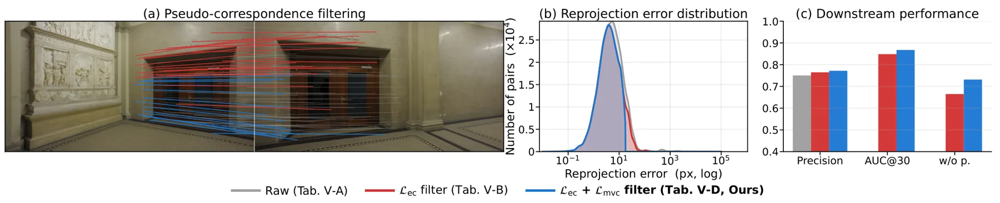
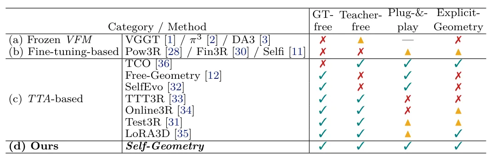
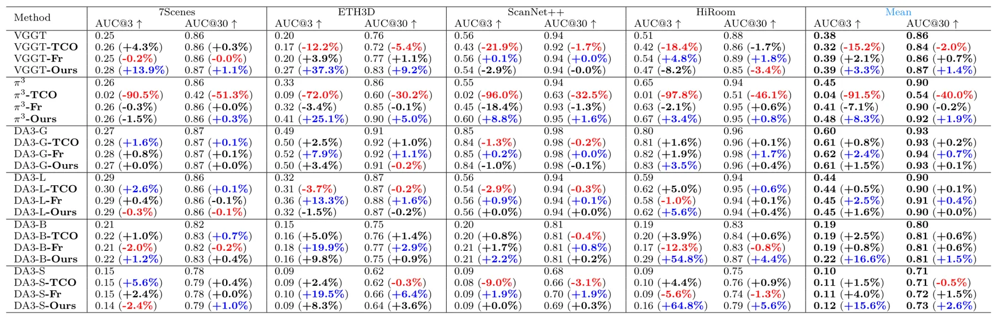
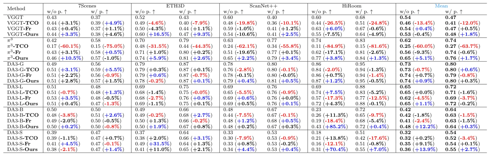

Self-Geometry：以显式多视图约束做免真值、即插即用测试时适配Self-Geometry: GT-Free and Plug-and-Play Test-Time Adaptation for Geometrically Consistent 3D Vision Foundation Models
直接面向相机位姿和多视图几何一致性，覆盖 6 个模型与 4 个 benchmark，作为 learned geometry front-end 很有参考价值；但逐场景适配成本、错配鲁棒性和相对 BA 的优势需要全文验证。
一句话工作总结
以像素对应构造伪真值，在测试时通过多视图与极线一致性损失和 LoRA 修正 foundation model 的位姿与几何预测。
摘要
Self-Geometry 是一种面向 3D vision foundation models 的 GT-free、plug-and-play test-time adaptation pipeline，使用 2D pixel correspondences 作为 pseudo ground-truth，直接施加显式多视图几何约束。Geometric Disentanglement Optimization 联合 Multi-View Consistency 与 Epipolar Consistency losses，并通过 Gradient Disentanglement 避免梯度冲突；Frame Angular-Neighbor 根据 SO(3) geodesic distances 选择视图；Lightweight TTA 则以 LoRA 适配模型。作者报告该方法在 VGGT、π³ 和四种规模的 DA3 共 6 个 VFM，以及 7Scenes、ETH3D、ScanNet++、HiRoom 四个 benchmark 上持续改善 pose 与 geometry estimation。
Recent Vision Foundation Models (VFMs) predict depth, camera pose, and pointmap in a single forward pass without per-scene optimization, achieving strong generalization. However, enforcing explicit multi-view geometric consistency, e.g., through bundle adjustment, is computationally costly and is thus not imposed during VFM pretraining, so such inconsistency can arise. To address this, implicit self-consistency derived from model outputs (e.g., pointmaps, features), though enforced at test-time in prior work, delivers inherently limited performance gain, especially on scenes where the pretrained VFM is highly inaccurate. In contrast to this implicit signal, we propose Self-Geometry, a plug-and-play test-time adaptation pipeline that directly imposes explicit multi-view geometric constraints using 2D pixel correspondences as pseudo ground-truth. Our proposed Self-Geometry consists of Geometric Disentanglement Optimization, which combines Multi-View Consistency and Epipolar Consistency losses with Gradient Disentanglement to prevent gradient conflict; Frame Angular-Neighbor, a view sampler based on SO(3) geodesic distances for lightly imposing these constraints; and Lightweight TTA, which adapts VFMs via LoRA. Our method achieves consistent improvements in both pose and geometry estimation across six VFMs (VGGT, $π^3$, DA3-Giant/Large/Base/Small) and four benchmarks (7Scenes, ETH3D, ScanNet++, HiRoom).
中文解读摘录
- 价值：针对前馈 3D vision foundation models 的 depth、camera pose 与 pointmap 跨视图不一致，在 test time 直接用 2D pixel correspondences 作为 pseudo ground-truth 注入显式多视图几何约束。
- 方法与结果：Geometric Disentanglement Optimization 联合 Multi-View Consistency 与 Epipolar Consistency，并以 Gradient Disentanglement 缓解梯度冲突；Frame Angular-Neighbor 按 SO(3) geodesic distance 采样视图，Lightweight TTA 通过 LoRA 适配。摘要报告在 6 个 VFM、7Scenes/ETH3D/ScanNet++/HiRoom 四组 benchmark 上均改善 pose 与 geometry estimation。
- 关注点：重点核查 correspondence 错配时的稳定性、逐场景 LoRA 时延和显存、相较 bundle adjustment 的质量—成本曲线，以及适配是否会破坏跨场景泛化。
- 链接：arXiv · PDF · 项目页
图表/页面预览

{kind=link}

{kind=link}

{kind=link}

{kind=link}

{kind=link}

{kind=link}

{kind=link}
